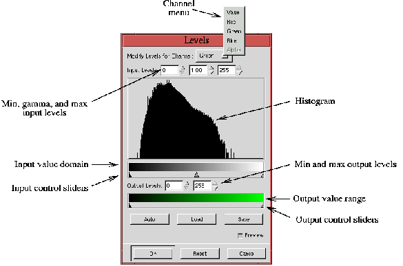
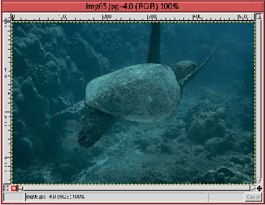
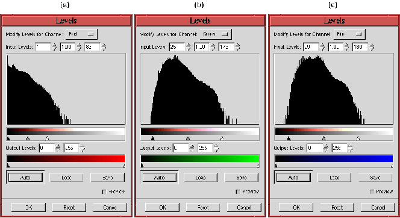
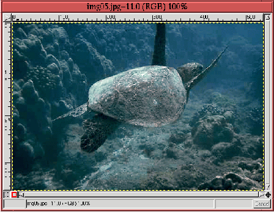

Next: 11.2
Коррекция цветового сдвига Up: 11.1
Коррекция динамического диапазона Previous: 11.1.1
Блики и тени
Next: 11.2
Коррекция цветового сдвига Up: 11.1
Коррекция динамического диапазона Previous: 11.1.1
Блики и тени
11.1.2 Использование инструмента ``Уровни''
Инструмент ``Уровни'' находится в меню окна изображения
Изображение->Цвета->Уровни. Он был использован в примере
предыдущего раздела для исследования динамического диапазона черно-белого
изображения. Здесь будут детально описаны возможности этого инструмента и то,
как он может быть применен к цветным изображением.
Figure: Инструмент ``Уровни''
 |
На рисунке 11.3
показано диалоговое окно инструмента ``Уровни''. Заметьте, что меню
каналов (``Изменить уровни для канала'') открыто и показывает пять возможных
каналов, уровни для которых могут быть показаны и изменены. Поскольку нас
интересует коррекция цвета, в этом разделе будут упоминаться только каналы
Красный, Зеленый и Синий.
Отображение гистограммы - очень удобная возможность инструмента
``Уровни'', поскольку она моментально показывает занимает ли канал весь
динамический диапазон или нет. Сразу под гистограммой расположена шкала серых
тонов, которая называется ``область входных значений''. В этой шкале
черный представлен значением 0 и белый - значением 255. Таким образом для
Зеленого канала, показанного на рисунке 11.3,
черный цвет из области входных значений представляет самый темный оттенок
зеленого, а белый цвет - самый светлый. Отсутствие гистограммы над частью
области входных значений означает отсутствие в канале точек с такими значениями.
Так на рисунке 11.3
вы можете видеть недостаток динамического диапазона, поскольку гистограмма
отсутствует над значительными участками в нижней и верхней частях диапазона
входных значений.
Остальные элементы диалогового окна инструмента ``Уровни''
предназначены для коррекции распределения гистограммы. Крайний левый и крайний
правый движки области входных значений служат для растягивания динамического
диапазона изображения, средний движок может быть использован для деформации
диапазона. Крайний левый движок называется движком управления тенью, крайний
правый - движком управления бликом и средний - движком управления полутонами.
Движки управления выходными значениями используются для сужения динамического
диапазона. Управление движками может осуществляться как интерактивно, путем их
перемещения при помощи мыши, так и путем ввода величин для гаммы, минимума и
максимума для входных и минимума и максимума для выходных значений.
Следующий пример демонстрирует корректировочные возможности инструмента
``Уровни''.
Figure: У этого изображения сжат
динамический диапазон
 |
На рисунке 11.4
представлено изображение со сжатым динамическим диапазоном, что видно при
рассмотрении распределения значений точек Красного, Зеленого и Синего каналов,
показанных на рисунке 11.5
(a), (b), и (c) соответственно.
Figure: Уровни для Красного, Зеленого и
Синего каналов
|
Рисунок 11.5
показывает, что Красный канал имеет наиболее бедный динамический диапазон.
Распределения в Зеленом и Синем каналах сходны и выглядят значительно лучше.
Figure: Настройка уровней
 |
На рисунке 11.6
показано, как должны быть настроены блики, тени и полутона для каждого канала, а
результат представлен на рисунке 11.7,
Figure: После настройки
уровней...
 |
котрый демонстрирует, что простая перенастройка уровней, расширяющая
динамический диапазон значительно исправляет изображение. Теперь черепаха не
сливается с остальным изображением и глубина пространства производит впечатление
трехмерности. В сравнении полученным изображением, черепаха с рисунка 11.4
кажется плоской, цвета тусклыми, а картинка в целом безжизненной.
Расширение динамического диапазона изображения может привести к появлению
сдвига цветов (см. раздел 11.2).
На самом деле, черепаха на рисунке 11.7,
кажется, имеет легкий малиновый оттенок. Но на беспокойтесь! Оттенки, возникшие
после применения инструмента ``Уровни'' могут быть скорректированы при
помощи инструмента ``Кривые'', описанного в следующем разделе.
В заключение отметим, что диалоговое окно инструмента ``Уровни'',
показанное на рисунке 11.3
содержит кнопку с надписью ``Авто'', которая автоматизирует процедуру,
описанную в этом разделе увеличивая до максимума динамический диапазон в
Красном, Зеленом и Синем каналах. Фактически при этом движки бликов и теней в
каждом канале устанавливаются примерно на 5% и 95% гистограммы соответственно.
После применение автоматической настройки уровни для каждого из каналов могут
быть проверены и при необходимости подкорректированы в ручную.
Next: 11.2
Коррекция цветового сдвига Up: 11.1
Коррекция динамического диапазона Previous: 11.1.1
Блики и тени
Grigory Bakunov 2003-05-26